Две отдельные комнаты: детская для двух девочек и гостиная-спальня родителей.
Кухня вынесена в нишу к стоякам санузла. Лоджия утепляется под кабинет и хранение.
Ниже — сравнение «было/стало», покомнатные планы с габаритами, спецификация мебели
и визуализации всех зон.
2жилые комнаты
4человека
34.3м² без лоджии
38.4м² с лоджией
1 эт.проще согласовать кухню
Логика перепланировки
Исходник — классическая однокомнатная: кухня 9.7, комната 15.2, санузел 4.3, прихожая 5.1, лоджия 4.1.
Для четверых нужны два спальных контура. Решение: комнату детям отдаём из кухни (там уже есть окно),
кухню переносим к мокрой зоне, большую комнату оставляем родителям как гостиную-спальню.
Санузел оставляем
Стояки, ванна, унитаз и раковина на месте — не трогаем гидроизоляцию и канализацию стояка.
Кухня → ниша у санузла (~3.5 м²)
Мойка и посудомойка ближе к стоякам. Варочная 2 конфорки, холодильник 600 мм, барная стойка на 2 стула. Вытяжка рециркуляционная.
Бывшая кухня → детская (~9.0 м²)
Окно сохраняется. Двухъярусная кровать 900×2000, общий стол 1400×600 на двоих, шкаф и стеллаж.
Комната → гостиная-спальня родителей (~12.5 м²)
Три зоны без капитальных стен: сон (кровать 1600×2000), гостиная (диван + ТВ), столовая (стол 1200×800 на 4).
Лоджия → кабинет и хранение (4.1 м²)
Утепление, тёплый контур, стол у окна, встроенные шкафы. Полный снос подоконного блока — только после согласования.
Было / Стало
Слева исходная 1к, справа целевая 2к. Красным — демонтаж перегородки кухни, зелёным — новая перегородка детской.
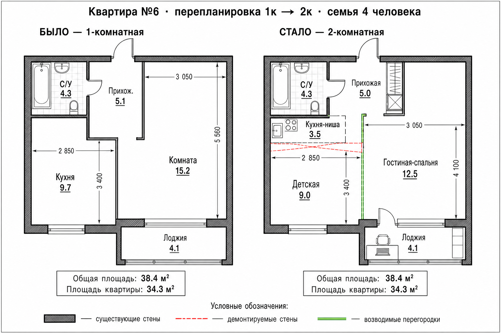
Сравнение планировок: 1-комнатная → 2-комнатная для семьи 2+2
Зона
Было
Стало
Что делаем
Кухня
9.7 м² отдельная
Ниша ~3.5 м² у С/У
Перенос мойки/плиты к стоякам
Комната
15.2 м² единственная
Гостиная-спальня ~12.5 м²
Зонирование мебелью + ковром
Детская
—
~9.0 м² (бывш. кухня)
Новая перегородка + дверь
Прихожая
5.1 м²
~5.0 м² + шкаф-купе
Часть площади под кухню-нишу
С/У
4.3 м²
4.3 м²
Без переноса стояков, косметика/замена сантехники
Лоджия
4.1 м² холодная
Кабинет + хранение
Утепление, розетки, шкафы
Согласование: перенос кухни и возведение/снос перегородок нужно согласовать
(проект перепланировки). На 1 этаже перенос кухни обычно допустим, если под квартирой нет жилых помещений.
Несущие стены не затрагиваются.
Аксонометрия всей квартиры
Общий вид «крыша снята»: как комнаты стыкуются и куда встаёт мебель.
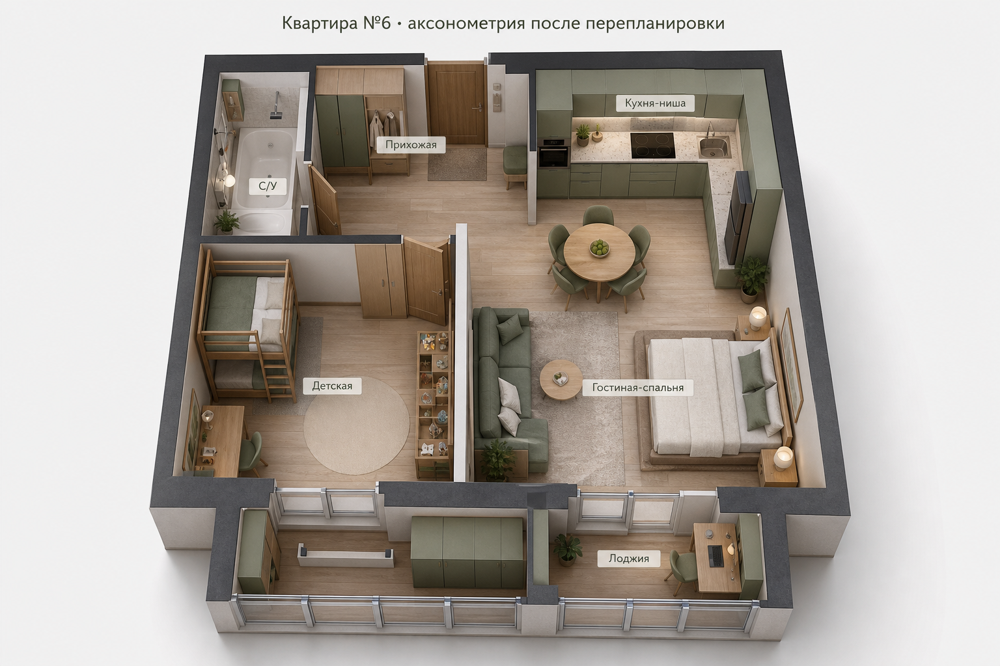
Аксонометрия после перепланировки с подписями зон
Общий план с габаритами мебели
Все ключевые предметы подписаны с размерами в мм. Проходы заложены от 600–700 мм.
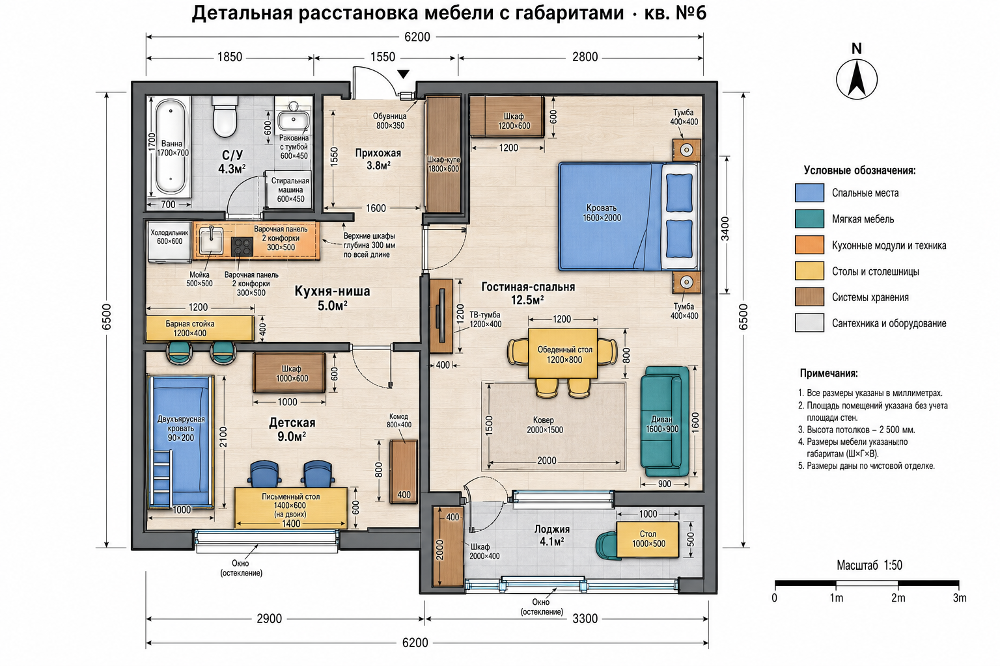
Сводный план мебели: детская, гостиная-спальня, кухня-ниша, лоджия, С/У
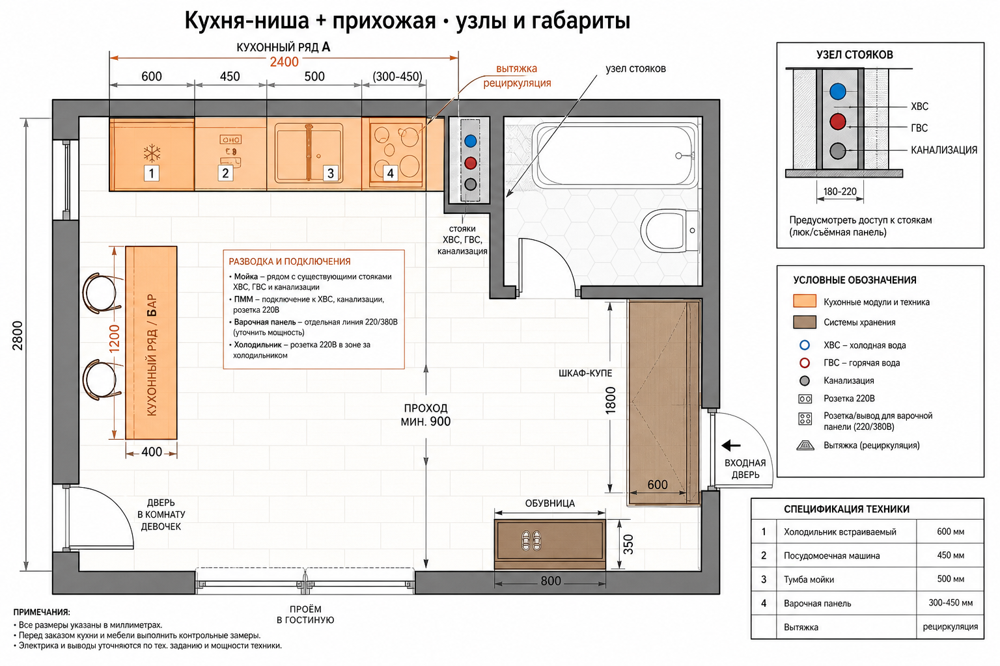
Узел «кухня-ниша + прихожая»: привязка к стоякам, ряды гарнитура, проход ≥900 мм
По комнатам: планы и интерьеры
1. Детская для двух девочек
~9.0 м² · бывшая кухня
Окно сохраняется. Спальные места — двухъярусная кровать, чтобы освободить пол под стол и игру.
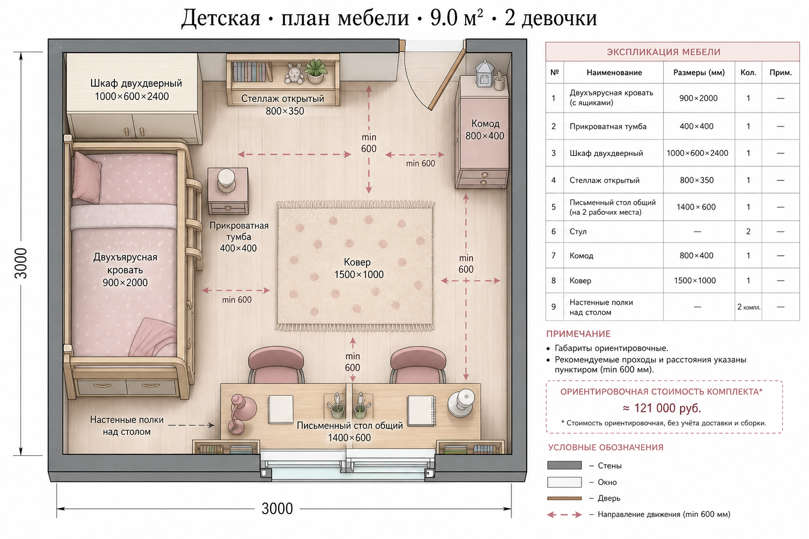
План мебели детской с габаритами и проходами
Состав
Кровать двухъярусная 900×2000 с ящиками
Стол письменный 1400×600 на 2 места у окна
2 стула, 2 настольные лампы
Шкаф 1000×600×2400
Стеллаж 800×350, комод 800×400
Ковер 1500×1000, полки над столом
Свет: основной потолочный + бра у каждой полки кровати + две лампы на столе.
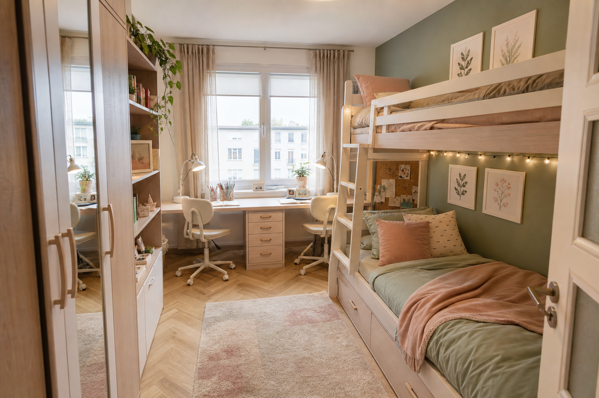
Ракурс от двери: кровать, стол у окна, шкаф
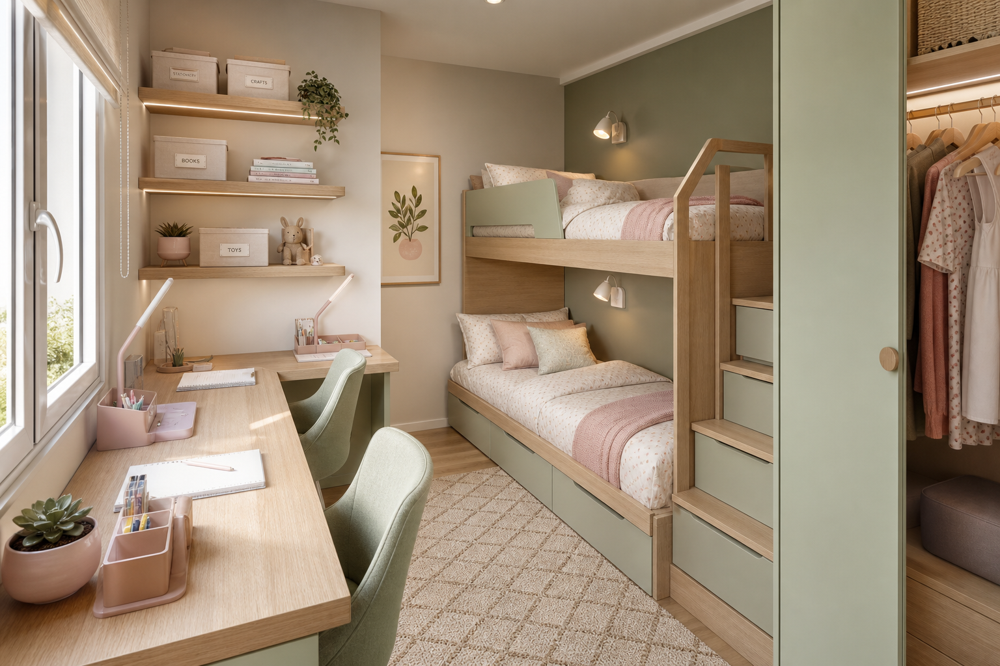
Ракурс от окна: два рабочих места и ярусная кровать
2. Гостиная-спальня родителей
~12.5 м² · три зоны
Сон / гостиная / столовая в одном объёме. Границы зон — ковром, светом и расстановкой, без лишних стен.
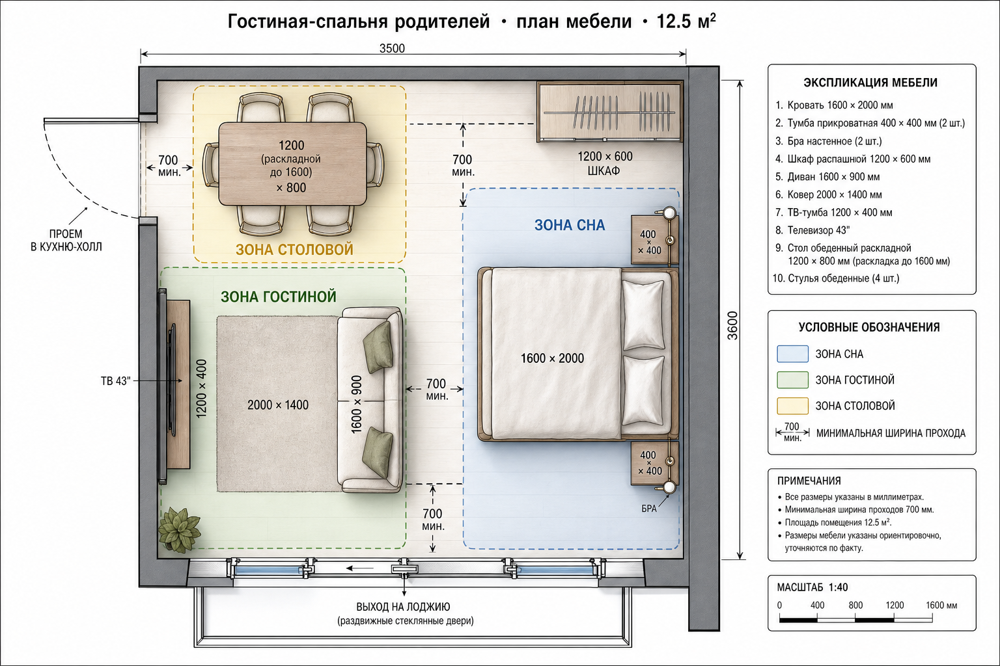
План с зонами: сон (синий), гостиная (зелёный), столовая (жёлтый)
Состав
Кровать 1600×2000 + 2 тумбы 400×400
Шкаф 1200×600 (или купе до потолка)
Диван 1600×900, ковер 2000×1400
ТВ 43″ + тумба 1200×400
Стол обеденный 1200×800 (раскладка до ~1600)
4 стула; проход к лоджии свободен
Вечером сцена «сон»: только бра у кровати. Днём — общий свет + торшер у дивана.
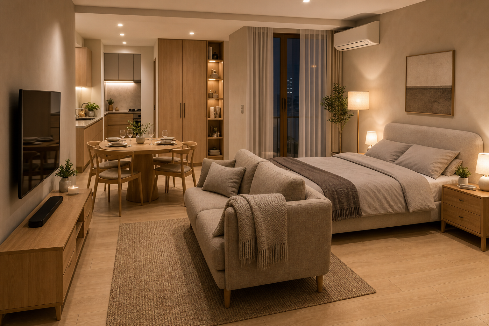
Общий вид: кровать, диван, ТВ, стол
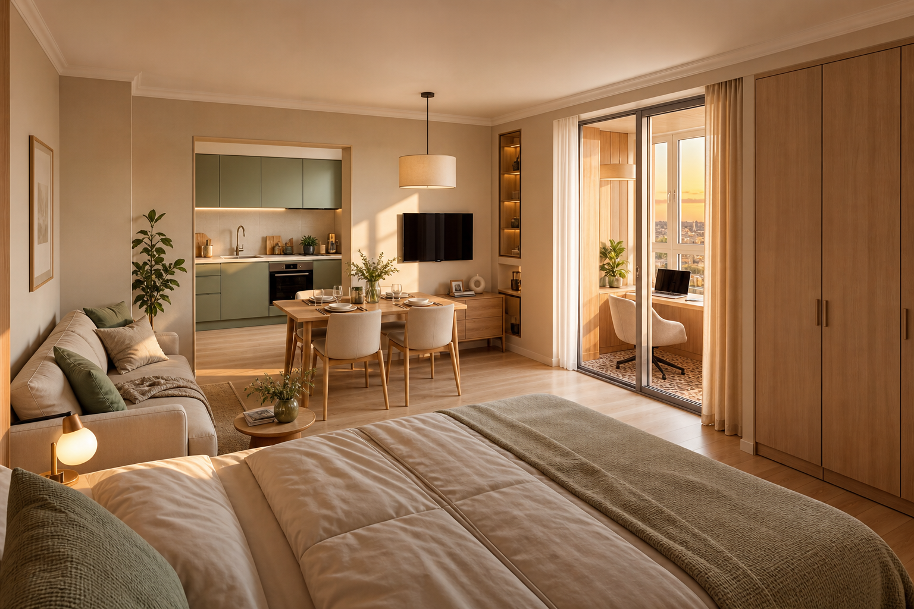
Вид от кровати к столовой и кухне-нише
3. Кухня-ниша и прихожая
кухня ~3.5 м² · прихожая ~5 м²
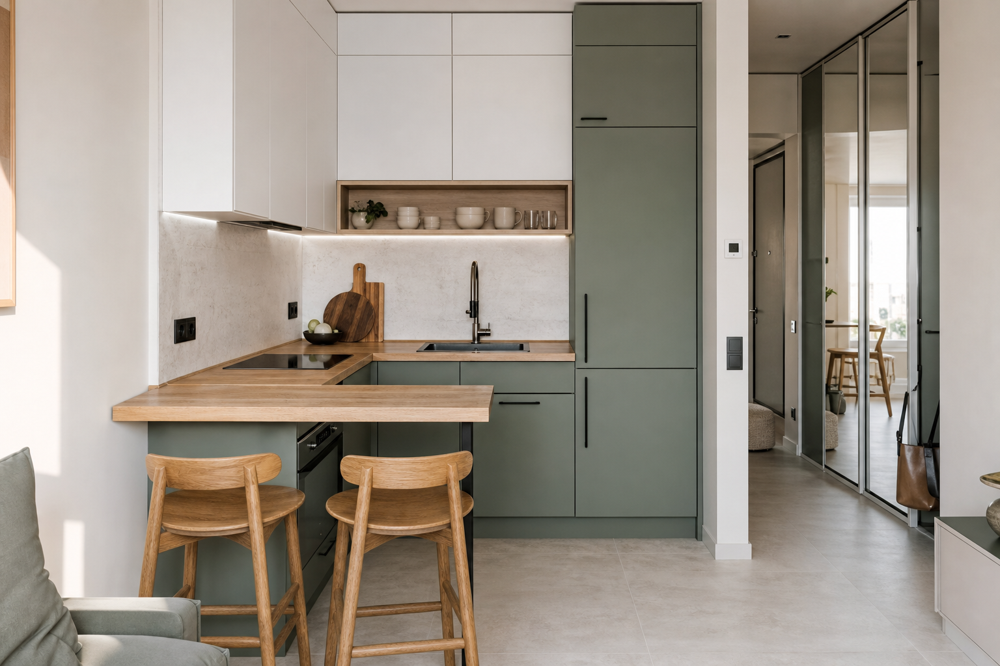
Кухня: шалфейный фасад, дубовая столешница, бар на 2
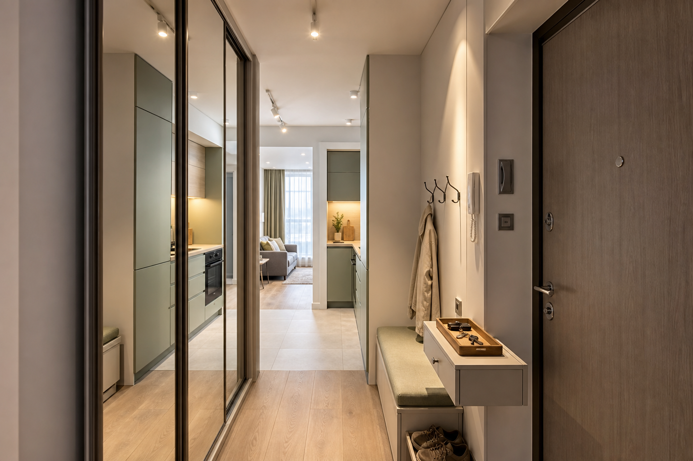
Прихожая: шкаф-купе с зеркалом, обувница-скамья
Кухня — техника
Холодильник 600×600
Варочная 2 конфорки (индукция)
Мойка + смеситель
ПММ 450 мм
Вытяжка рециркуляция
Барная стойка 1200×400 + 2 стула
Прихожая — хранение
Шкаф-купе 1800×600 до потолка
Обувница 800×350 с сиденьем
Крючки / консоль для ключей
Проход к комнатам без узких «горлышек»
4. Санузел и лоджия
С/У 4.3 м² · лоджия 4.1 м²
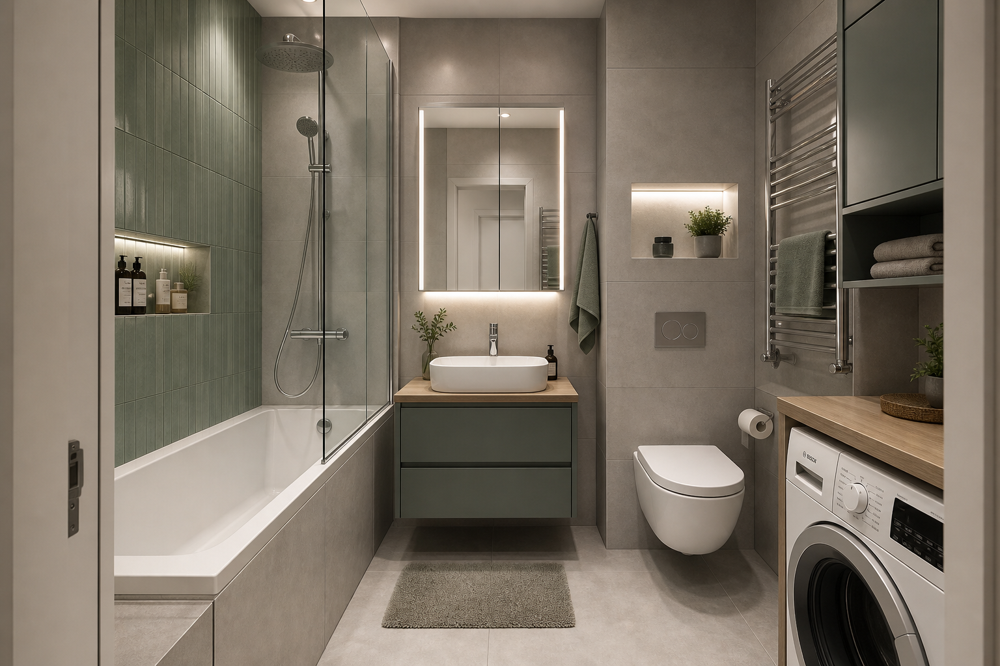
С/У: ванна 1700, подвесной унитаз, тумба, место под СМА
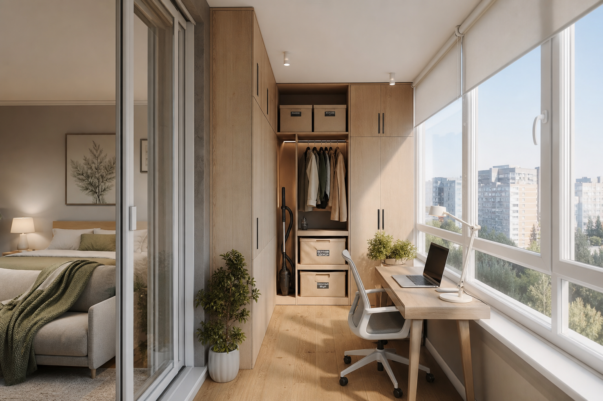
Лоджия: рабочий стол у окна + шкафы для хранения
Состав работ (эскизно)
Демонтаж
Перегородка/часть стены бывшей кухни
Старая отделка по необходимости
Старая кухонная разводка (после согласования)
Новое
Каркасная перегородка детской + звукоизоляция
Дверь в детскую 700–800 мм
Кухонная ниша: вода, канализация, электрика
Утепление лоджии, розетки, свет
Отделка
Единый светлый пол (дуб/инженерка)
Стены: тёплый белый + шалфейный акцент
Потолок: натяжной/ГКЛ с сценариями света
С/У: керамогранит, гидроизоляция
Это концепция для обсуждения. Перед ремонтом нужен обмерный план, проект перепланировки
и проверка возможности переноса кухни в вашем регионе/Жилищной инспекции.
Спецификация мебели
Сводный список с ориентировочными габаритами — удобно брать с собой в магазин или отдавать корпуснику.
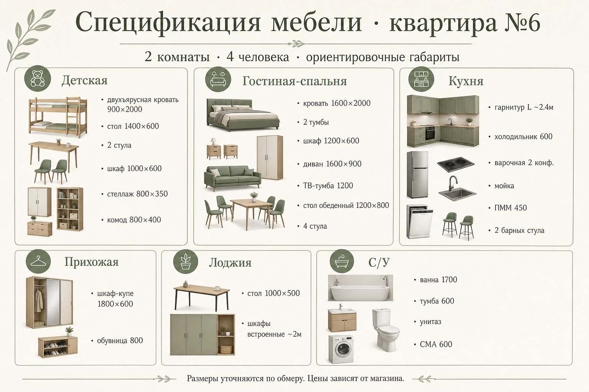
Спецификация по зонам: детская, гостиная-спальня, кухня, прихожая, лоджия, С/У